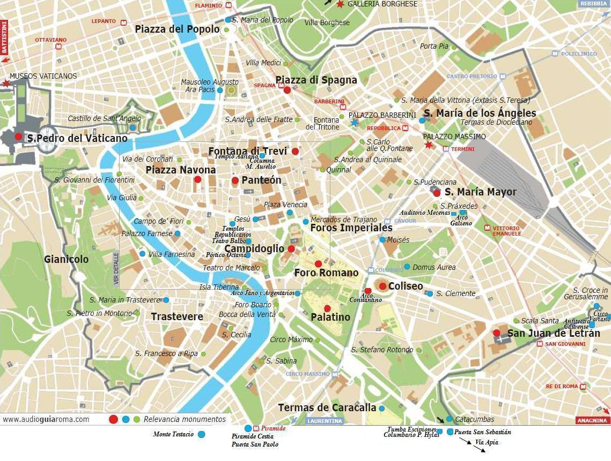
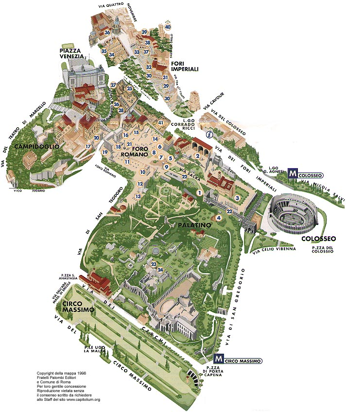

|
Monumentos de Roma

Foro de Roma
|

|
1 Arco de Tito
2 Basílica de Majencio
3 S. Francesca Romana
4 Restos de las Termas
5 Templo de Rómulo
6 Templo Antonino y Faustina
7 Templo de Vesta
8 Templo de Cesar
9 Casa de las Vestales
10 Templo de Castor y Pollux
11 Basílica Julia
12 Maria Antiqua
13 Jardines Farnese
14 Basílica Emilia
15 Curia
16 Arco de Septimio Severo
17 Templo de Júpiter
18 Rostra
19 Templo de Saturno
20 Templo de Vespasiano
21 Columna de Focas
22 Vía Sacra
23 Domus Flavia
24 Domus Augustana
25 Foro de Cesar
26 Museo del Risorgimento
27 Basílica Argentaria
28 Cárcel Mamertina
29 Foro de Augusto
30 Foro de Nerva
31 Torre del Grillo
32 Casa del caballero de Rodi
33 Columna Trajana
34 Basílica Ulpia
35 Plaza Venecia
36 S. Maria di Loreto
37 Foro de Trajano
38 Mercado de Trajano
39 Largo Magnanapoli
40 Torre delle Milizie
|
|